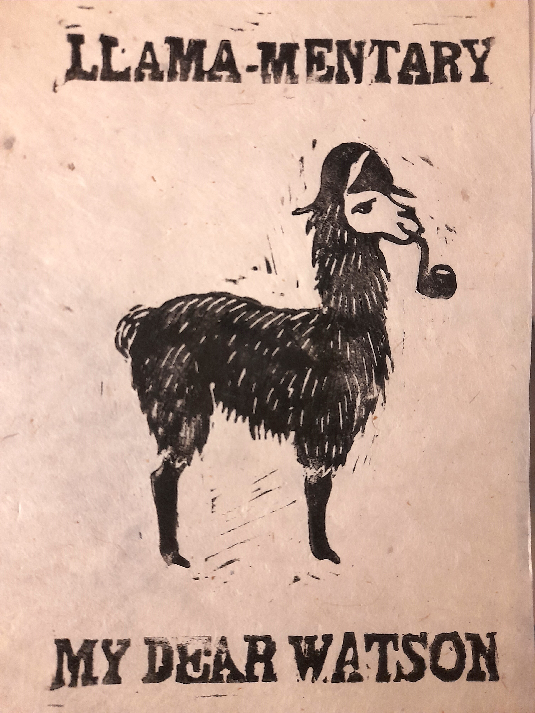
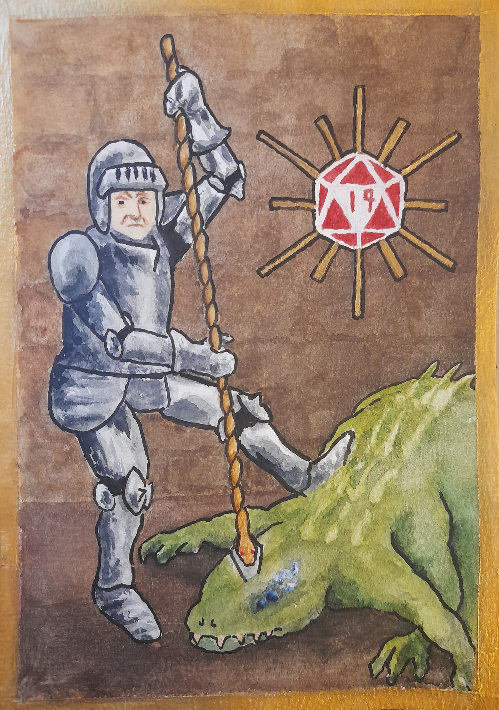
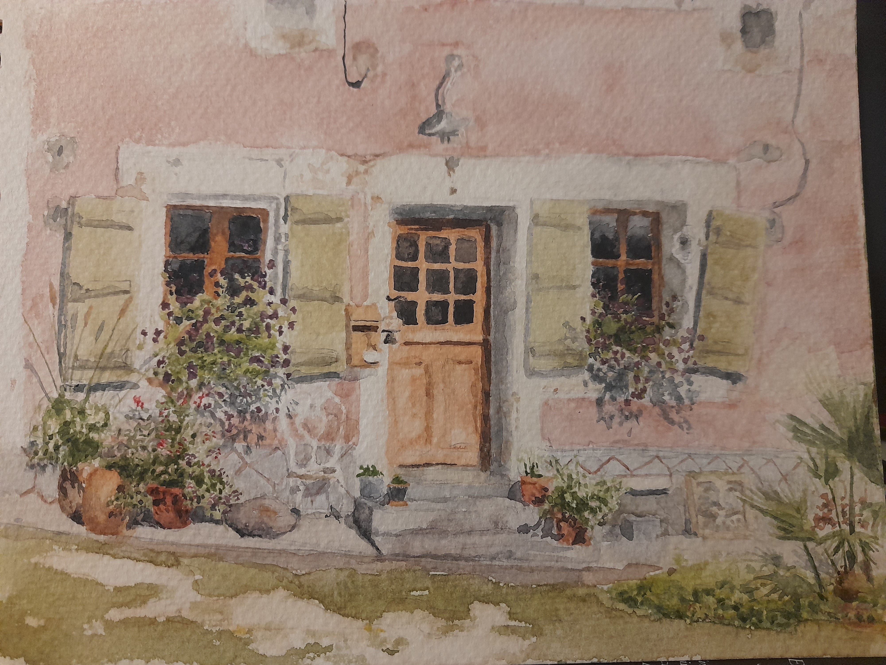

A selection of crafts and artwork I have produced over the years.
Oil Paint
Painted from life during christmas 2021, oranges, blueberries and old hydrangea cuttingsPainted from a photo taken along the leeds liverpool canal near chorleyBerty posed well at wast water, painted using palette knives
Lino Print
A wanted poster created as a prop for a long running dungeons and dragons game. The black spider was the primary antagonist of the players

Made in exchange for cookies
Ceramics
Water colour

An attempt to copy the style of illustrations in illuminated manuscripts. The piece celebrates the narrowest of victories over the basilisk encountered in the lair of ras nsi

The front of a farm building painted from life. I stayed here during a WWOOF near the dordogne france